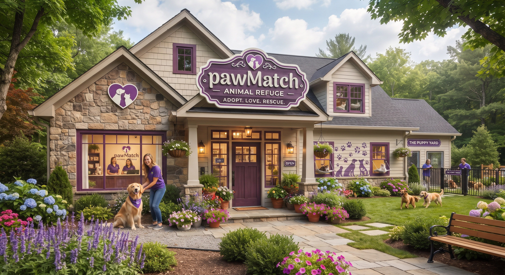
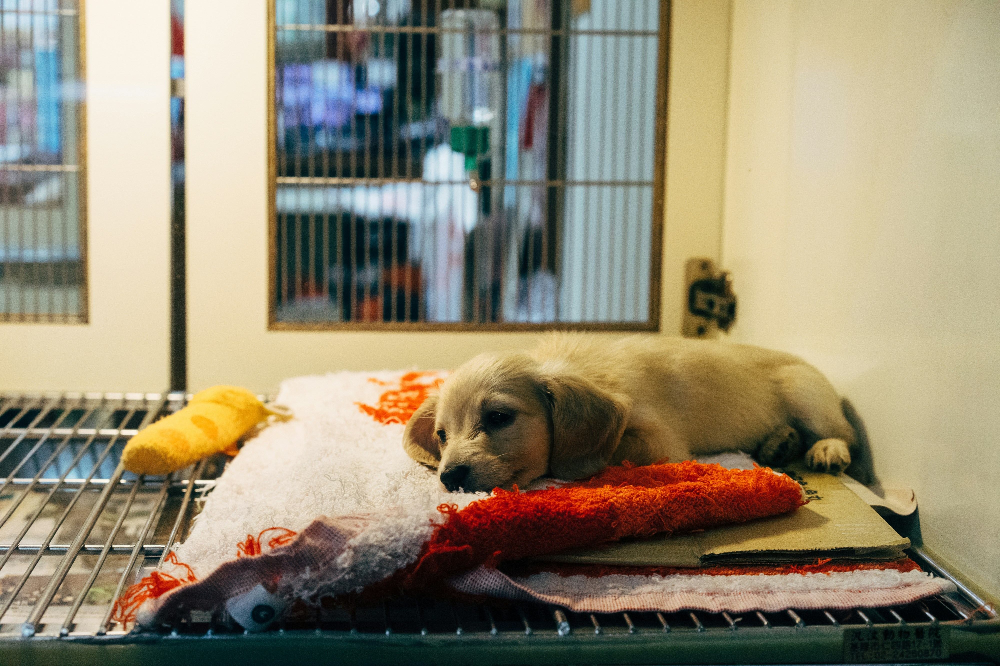
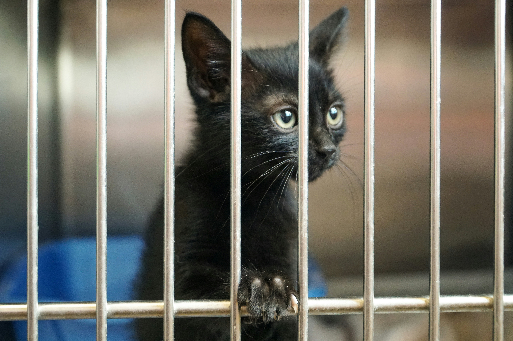

Rescate y protección
Ofrecemos un espacio seguro a animales en situación vulnerable.
Refugio Huellitas
Rescatamos perros y gatos, los cuidamos y les ayudamos a encontrar una familia responsable.
Inicia sesión para adoptar
En Refugio Huellitas recibimos a perros y gatos que necesitan protección. Les damos alimento, cuidados y atención veterinaria mientras buscamos para ellos una familia que los quiera y cuide toda la vida.
Ofrecemos un espacio seguro a animales en situación vulnerable.
Procuramos su alimentación, salud y recuperación.
Buscamos hogares comprometidos con el bienestar de cada mascota.
Ellos están esperando la oportunidad de llenar un hogar de alegría.


Ubicación: Calle Esperanza 25, colonia Las Huellitas, Villa Esperanza.
Horario: Lunes a sábado, de 10:00 a. m. a 5:00 p. m., con cita previa.
Correo: contacto@refugiohuellitas.example
Teléfono: 222 000 0000